Deployment of a high-availability web application with AWS
ARCHITECTURE
In this lab, we will design and implement a robust and secure network architecture to host a WordPress application. The architecture is based on the use of 2 Availability Zones (AZ) located in 1 Region to ensure that our WordPress is highly available and fault-tolerant.
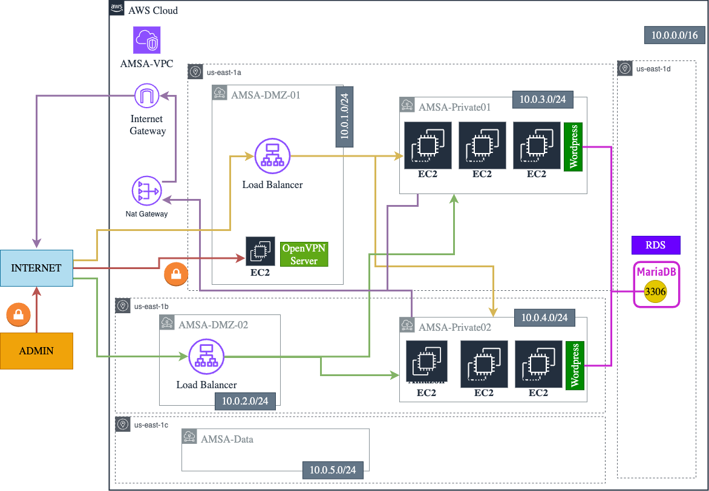
The image shows how, through the internet, users access the Load Balancer, which distributes traffic to the EC2 instances hosting WordPress. These instances connect to the RDS database to manage WordPress content. The EC2 instance in the DMZ allows secure access for the administration of private resources
Components:
- VPC, subnets, route tables, and security groups.
- Secure VPN for administrative access.
- Wordpress EC2 instances distributed across private subnets in different AZs, accessible only through the Load Balancer, never directly from the Internet.”.
- Load Balancer which acts as a public entry point that ensures the uniform distribution of traffic to the WordPress EC2 instances.
- High available Data Base RDS (MySQL) located in dedicated private subnets.
- DMZ designed with an EC2 instance in a public subnet that will act as a secure access point (via SSH tunnel) for managing all private resources.
1. VPC and Subnets
The first step in our architecture is to define a VPC (Virtual Private Cloud) and the necessary subnets to isolate the different components of the application. The VPC will provide a virtualized network environment where we can deploy our AWS resources. We will configure it with the network 10.0.0.0/16, which gives us up to 65,536 IP addresses, more than enough for our use case.
The subnet mask determines the number of IP addresses available within a network or subnet. This is expressed using CIDR notation (Classless Inter-Domain Routing), where the value (/n) indicates the number of bits reserved for the Network portion. A subnet mask of /16 means that the first 16 bits of the IP address are reserved for network identification, leaving the other 16 bits for host identification. This allows up to 65,536 IP addresses (\(2^{32-16}\)) within that network.
When you perform subnetting to create subnets within your VPC, you increase the CIDR value (for example, from /16 to /24) to reduce the size of the subnets and better isolate traffic. For example, a subnet with CIDR /24 has 256 IP addresses (\(2^{32-24}\)).
Remember that the total calculated addresses are not the total usable addresses for your servers (hosts). Some addresses are reserved for special uses, such as network identification and broadcast.
Podem definir la VPC a través de la interfície web d’AWS, utilitzant els formularis disponibles:

1.2. Creating the Subnets
Add the necessary subnets for our architecture. Go to VPC → Subnets → Create subnet. Select the VPC we just created and add the following subnets:
- AMSA-DMZ-01: Public subnet in the zone us-east-1a. This subnet will host the EC2 instance that will serve as a secure access bridge (via SSH tunnel) for managing all private resources. (10.0.1.0/24).
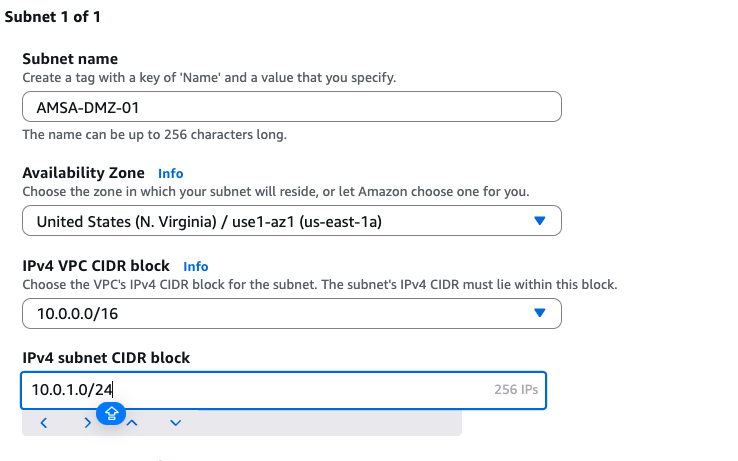
- AMSA-DMZ-02: Public subnet in the zone us-east-1b. This subnet will host the EC2 instance that will serve as a secure access bridge (via SSH tunnel) for managing all private resources. (10.0.2.0/24).
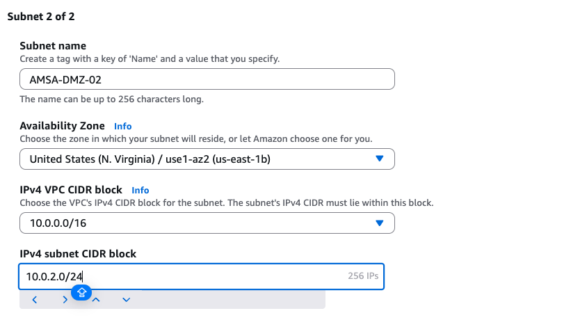
- AMSA-Private01: Private subnet for the WordPress instances in the availability zone us-east-1a. (10.0.3.0/24).
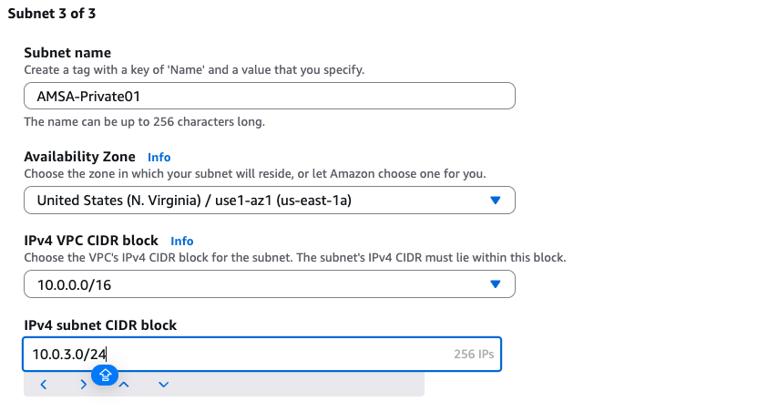
- AMSA-Private02: Private subnet for the WordPress instances in the availability zone us-east-1b. (10.0.4.0/24)
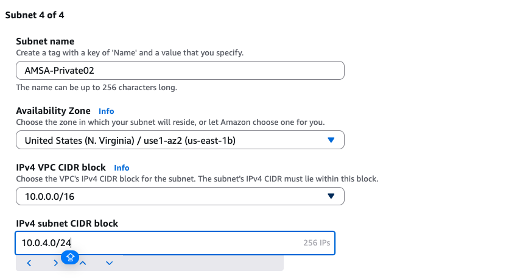
- AMSA-Data: Private subnet for the WordPress instances in the availability zone us-east-1c. (10.0.5.0/24)
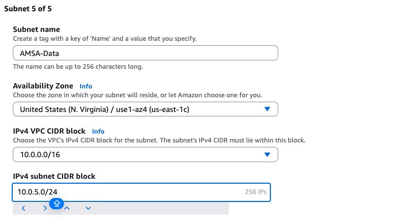
2. Routing Tables and Associations
To manage traffic routes and determine how it is distributed among the subnets, we will create route tables and associate them with the corresponding subnets..
2.1. Internet Gateway Configuration
We will use an Internet Gateway (IGW) to allow the public subnets (AMSA-DMZ-01 and AMSA-DMZ-02) to have both inbound and outbound Internet access. To do this, we will first create the IGW and then associate it with our VPC.
The first step is to create the Internet Gateway. Go to VPC → Internet Gateways → Create internet gateway. Once created, name it AMSA-IG.

The second step is to associate the Internet Gateway with the VPC. Select the Internet Gateway we just created and click on Actions → Attach to VPC. Select the VPC AMSA-VPC and click on Attach internet gateway.

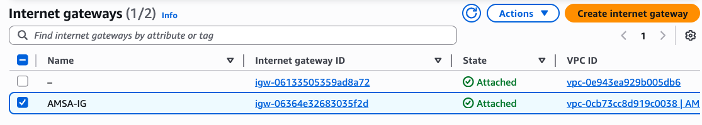
Make sure the Internet Gateway is correctly associated with the VPC. If it is not associated, the public subnets will not be able to access the Internet.
2.2. Creation of Routing Tables
Each subnet needs a route table to define how inbound and outbound traffic is directed. We will create specific route tables for each type of subnet (public and private) and associate them with the corresponding subnets.
2.2.1. Routing for public subnets (DMZ)
The first step is to create the route table for the public subnets. Go to VPC → Route Tables → Create route table. Select VPC AMSA-VPC and name the route table AMSA-DMZ01-RT.
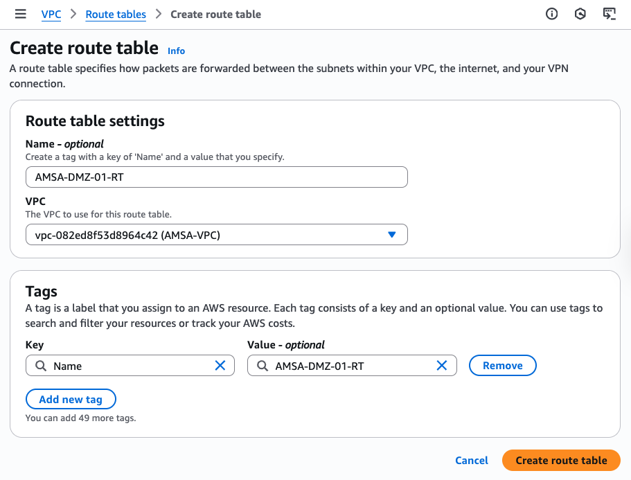
The second step is to associate the route table (AMSA-DMZ01-RT) with the subnet AMSA-DMZ-01 allow outbound traffic to the Internet through the Internet Gateway we created earlier.
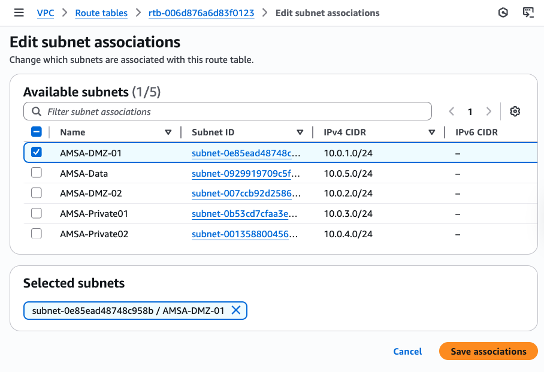
The third step is to allow outbound traffic to the Internet through the Internet Gateway we created earlier. To do this, go to the section Routes and click on Edit routes. Next, Add route and edit (Destination: 0.0.0.0/0; Target:Seleccionar el AMSA-IG).

Perform the same steps for the subnet AMSA-DMZ-02, modifying only the name of the route table and the association with the subnet.
2.2.2. Routing for private subnets
Private subnets do not have direct access to the Internet for security reasons. Therefore, we need to configure the route tables for these subnets so that they can access the Internet through a NAT Gateway (Network Address Translation Gateway). This will allow instances within the private subnets to initiate outbound connections, but prevent external sources from initiating connections to them.
A NAT Gateway is a managed service by AWS that allows instances in a private subnet to access the Internet for software updates, package downloads, etc., without exposing those instances directly to the Internet. The NAT Gateway translates the private IP addresses of the instances into a public IP address when those instances make requests to the Internet.
To create the NAT Gateway, we need an Elastic IP. Therefore, we will first create an Elastic IP and then use it to create the NAT Gateway. Name it AMSA-NAT-EIP.
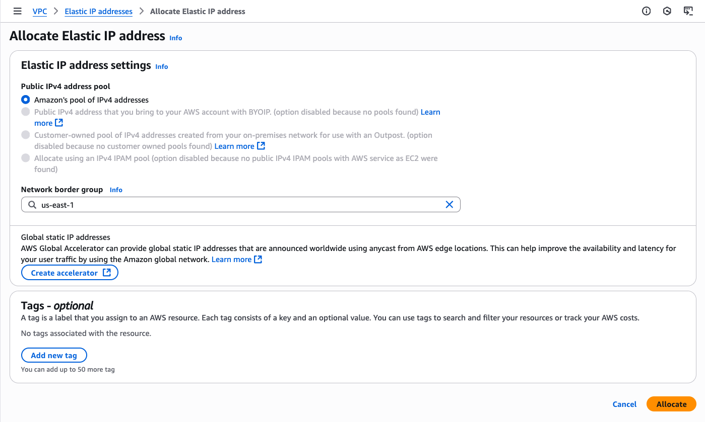
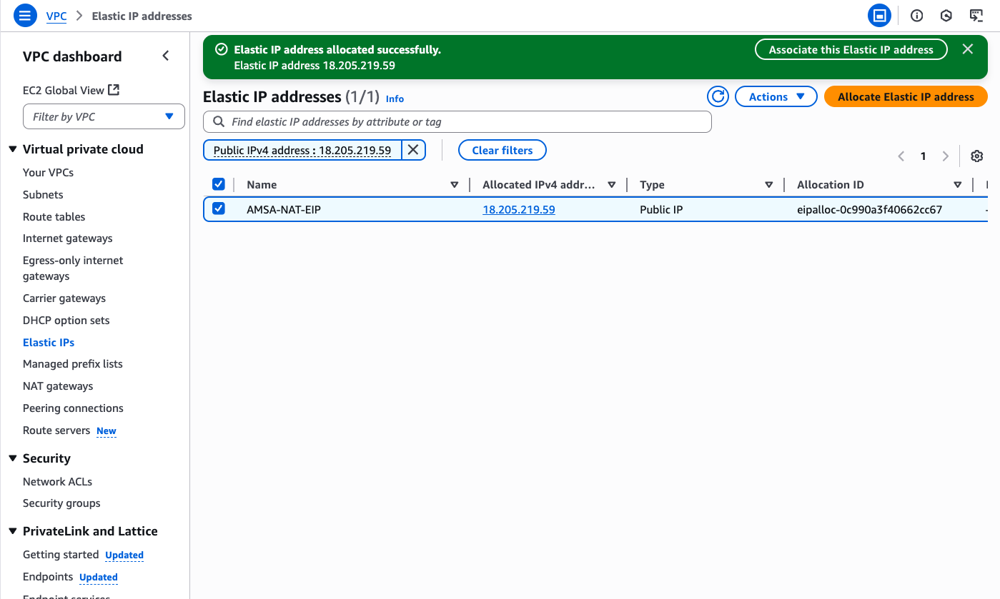
Once we have the Elastic IP, we can create the NAT Gateway. Name it AMSA-NG and associate it with the subnet AMSA-DMZ-01.
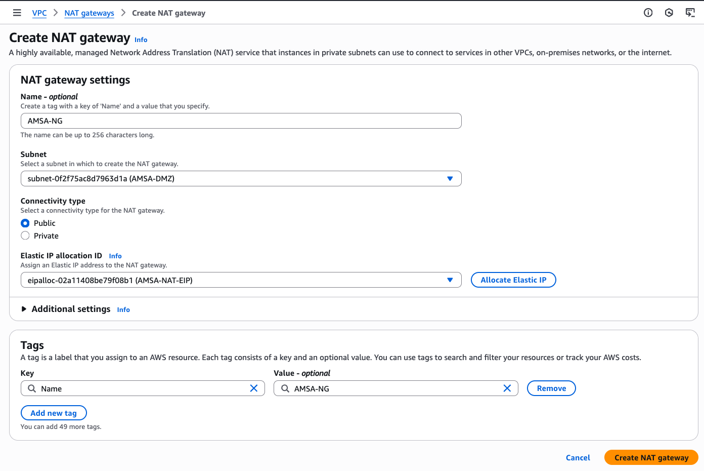
Create the route table (AMSA-Private01-RT) for the subnet AMSA-Private01 and we will associate it with the subnet. This route table will allow the instances within this subnet to access the Internet through the NAT Gateway.

The second step is to associate the route table (AMSA-Private01-RT) with the subnet AMSA-Private01 and allow outbound traffic to the Internet through the NAT Gateway we created earlier.
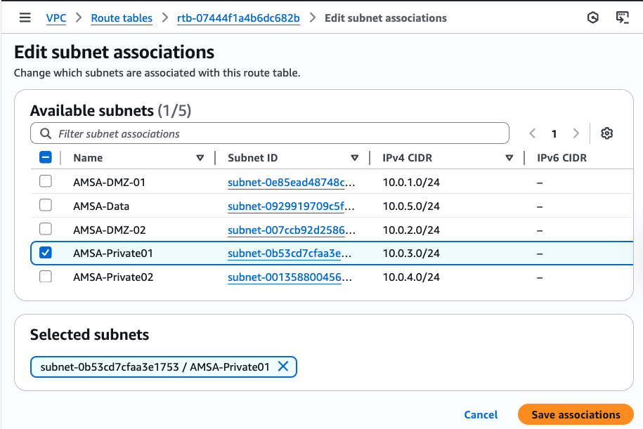
The third step is to allow outbound traffic to the Internet through the NAT Gateway we created earlier. To do this, go to the section Routes and click on Edit routes. Next, Add route and edit (Destination: 0.0.0.0/0; Target:Select AMSA-NG).
Repeat the same steps for the subnet AMSA-Private02, modifying only the name of the route table and the association with the subnet.
2.2.3. Routing for the data subnet (AMSA-Data)
The subnet AMSA-Data will not host instances that require Internet access. Therefore, we do not need to configure any route for this subnet. We will create an empty route table and associate it with the subnet AMSA-Data. This network will be completely isolated and will only allow internal communication within the VPC.
3. Security Groups
Security Groups are a tool for controlling network traffic for instances and other AWS resources, acting as a virtual firewall. They allow defining rules that specify which connections are allowed for both inbound and outbound traffic
- Trafic inbound: It allows you to decide which types of incoming connections (to the resource) are permitted.
- Trafic outbound: Control which outbound connections (from the resource to other destinations) are authorized.
3.1. Security Group for EC2 instances
- Inbound connections for web services HTTP (port 80) and HTTPS (port 443), accessible from any origin.
- SSH conections (port 22) for remote administration, also accessible from any origin (initially, but later they will be restricted).
- All outbound connections (outbound). By default, they are allowed in AWS, which enables EC2 instances to communicate with other resources such as RDS.
To do this, we will navigate to the AWS VPC console, select the Security Groups section, and click Create security group. Next, we will fill in the fields with the necessary information and click Create security group. You can name it AMSA-WP-SG.
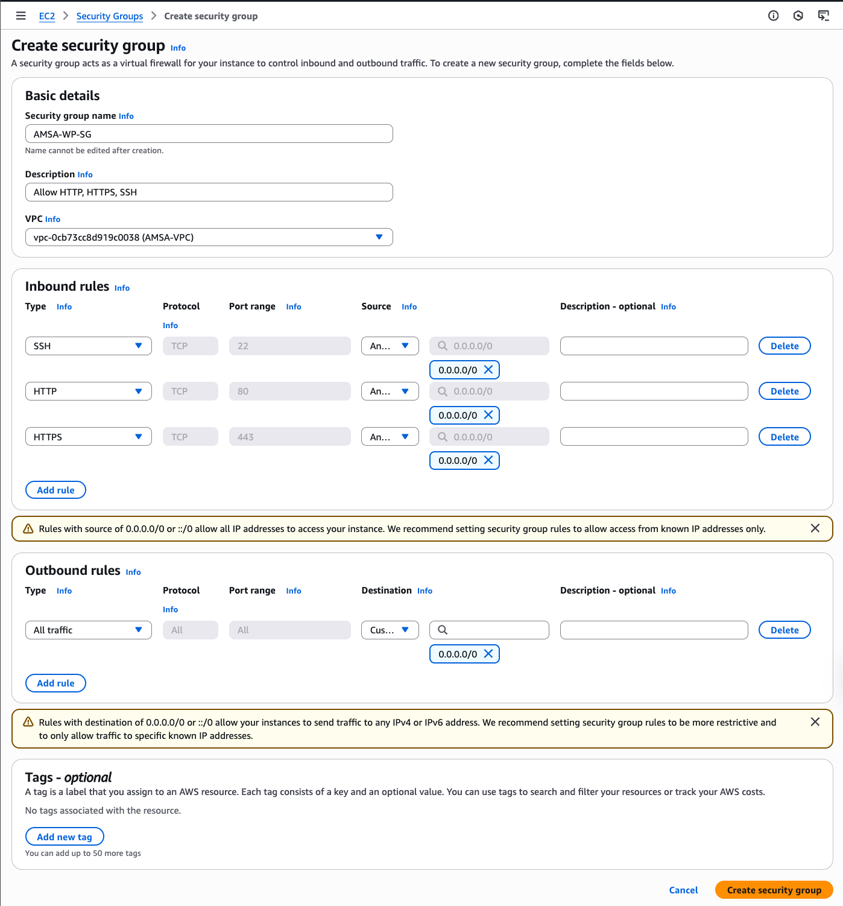
Now we allow all network traffic for web services and SSH. Once everything is configured, we will restrict this access only to inbound traffic coming from the load balancer for web services and from our internal network for SSH.
3.2. Security Group for the database RDS
- Inbound connections: t will only allow traffic on port 3306 (MySQL) and exclusively from EC2 instances that belong to the security group AMSA-WP-SG.
- Outbound connections: By default, AWS will allow all outbound connections, which ensures that the database can communicate with other resources if necessary.
To do this, we will navigate to the AWS VPC console, select the Security Groups section, and click Create security group. Next, we will fill in the fields with the necessary information and click Create security group.
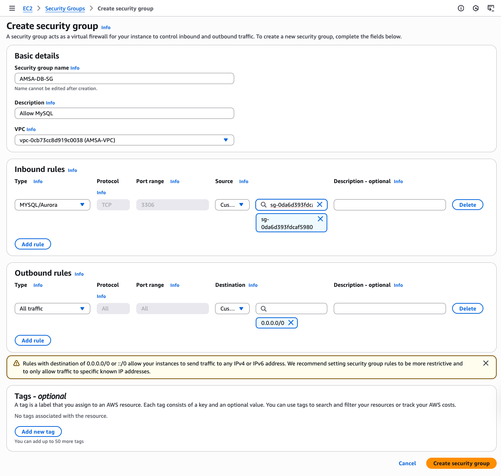
3.3. Summary
| Security Group | Inbound | Outbound |
|---|---|---|
| AMSA-WP-SG | HTTP (80) and HTTPS (443) from 0.0.0.0/0; SSH (22) from 0.0.0.0/0 | All allowed |
| AMSA-DB-SG | MySQL (3306) from AMSA-Web-SG | All allowed |
4. Creation of the RDS Database
We already configured the database in the previous lab Deploying a web application with AWS. The only difference is that now the database is located in a private subnet and is only accessible from EC2 instances that belong to the security group AMSA-Web-SG.
- Compute resources: Don’t connect to an EC2 compute resource
- VPC: AMSA-VPC
- Subnet Group: Create new DB Subnet Group
- Public accessibility: No
- VPC security group: AMSA-DB-SG
- Availability Zone: us-east-1d
5. Creation of EC2 instances and Web Server Configuration with WordPress
The EC2 instances that will host WordPress will be deployed in private subnets. AWS allows us to create instance templates (Launch Templates) that make it easier to create instances with a predefined configuration. Therefore, we will create an instance template that includes the necessary configuration for our WordPress EC2 instances.
Create an EC2 instance with Amazon Linux, selecting the VPC AMSA-VPC and the subnet AMSA-DMZ-01. Make sure that the instance uses the security group AMSA-WP-SG. You can name it AMSA-DB-Config. Select assign public IP. We will only use this instance to initialize the database and then we can delete it.
Once the instance is configured, connect to it via SSH using the private key corresponding to the public key you associated with the instance during its creation. Then configure the MySQL database for WordPress.
Let’s create a launch template (Launch Template) for the EC2 instances that will host WordPress. This template will include the necessary configuration for the instances, including the installation and configuration script for WordPress.
- Template name: AMSA-WP-Template
- AMI: Amazon Linux 2023 (64-bit x86)
- Instance Type: t2.micro
- Key Pair: AMSA-KEY
- Subnet: Do not select any subnet (it will be selected dynamically
- Security group: AMSA-WP-SG
- Advanced Details: Add the following script to the User Data section.
Modify the database connection details according to your own data.
#!/bin/bash
# sudo bash install_wp.sh
# Adjust the following data according to your own details
DB_NAME=""
DB_USER=""
DB_USER_PASSWORD=""
DB_HOST=""
if [ "$(id -u)" -ne 0 ]; then
echo "Please run this script with sudo or as root."
exit 1
fi
dnf install -y wget php-mysqlnd httpd php-fpm php-mysqli php-json php php-devel php-gd expect
cd /tmp
wget https://wordpress.org/latest.tar.gz
tar -xzf latest.tar.gz
# Configure WordPress
cp wordpress/wp-config-sample.php wordpress/wp-config.php
sed -i "s/database_name_here/$DB_NAME/g" wordpress/wp-config.php
sed -i "s/username_here/$DB_USER/g" wordpress/wp-config.php
sed -i "s/password_here/$DB_USER_PASSWORD/g" wordpress/wp-config.php
sed -i "s/localhost/$DB_HOST/g" wordpress/wp-config.php
sudo cp -r wordpress/* /var/www/html/
sudo sed -i 's/AllowOverride None/AllowOverride All/g' /etc/httpd/conf/httpd.conf
sudo chown -R apache:apache /var/www
sudo chmod 2775 /var/www
sudo systemctl restart httpdOnce the launch template is created, you can use it to create EC2 instances with WordPress already configured and ready to connect to your RDS database. Go to EC2 and select Launch Instance. Then select the launch template AMSA-WP-Template and configure the remaining parameters according to your needs.
- Number of instances: 2
- Subnet: Select the subnet AMSA-Private01 for the first instance and AMSA-Private02 for the second instance. You can name them AMSA-WP-01 i AMSA-WP-02 respectively.
These instances will not have a public IP, as they will only be accessible through the load balancer that we will configure later. For now, you will not be able to access them directly via SSH or HTTP.
6. Load Balancer Configuration
At this point, we will create a load balancer for our EC2 instances. This load balancer will be responsible for evenly distributing traffic among the EC2 instances hosting WordPress.
There are 3 types of load balancers in AWS: Application Load Balancer (ALB), Network Load Balancer (NLB) and Gateway Load Balancer (GWLB). In this case, we will use an Application Load Balancer (ALB), as it is recommended for web applications that use HTTP and HTTPS.
Navigate to the AWS console and select the EC2 service. In the sidebar, select Load Balancers and then Create Load Balancer. Choose Application Load Balancer and click Create.
- Load Balancer name: AMSA-ALB
- Scheme: Internet-facing
- IP Address Type: IPv4

VPC: AMSA-VPC
Availability Zones: Select the availability zones where we have the public subnet AMSA-DMZ-01 (us-east-1a) and AMSA-DMZ-02 (us-east-1b).
Security Groups: New security group (AMSA-ALB-SG), this security group will allow inbound traffic for ports 80 (HTTP) and 443 (HTTPS) from any source but will restrict outbound traffic to the EC2 instances (security group AMSA-WP-SG).
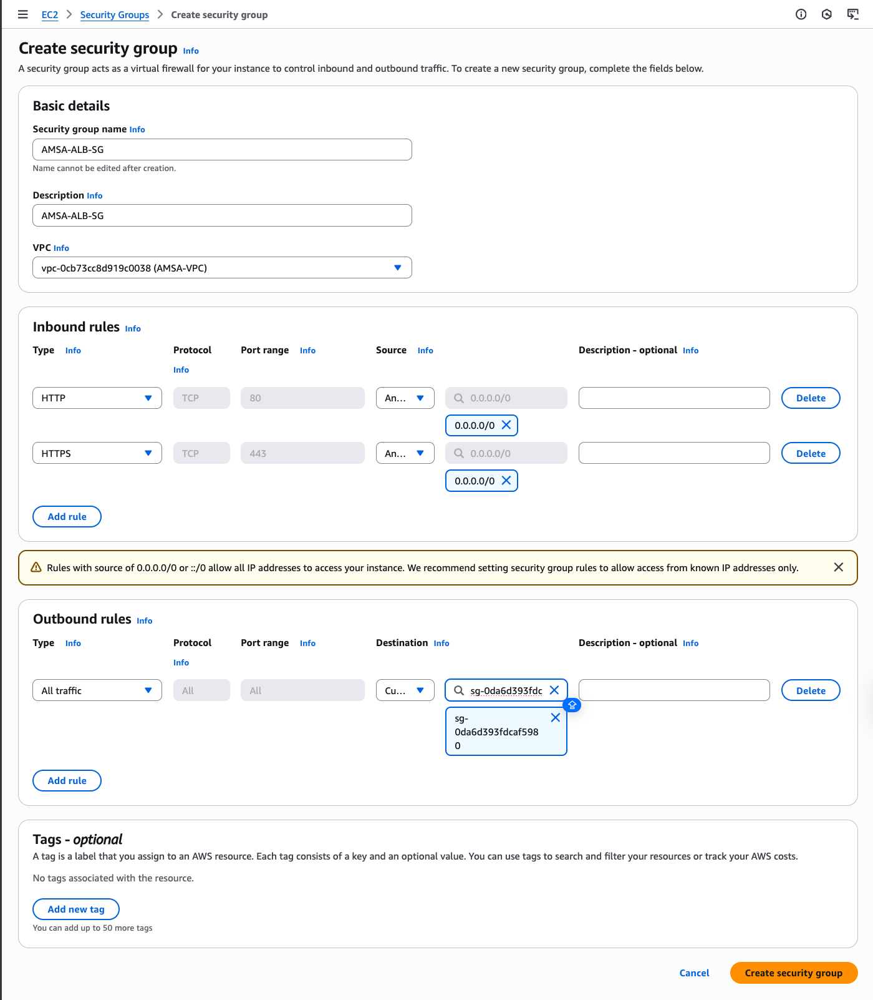
Security Group for the Load Balancer 
Load balancer configuration Listeners: Create a listener for port 80 (HTTP), which will redirect traffic to port 80 of the EC2 instances. For port 443 (HTTPS), we will not configure any redirection for now. To do this, you must first create a Target Group. This group is necessary to indicate to the load balancer where to send the traffic.
- Target Group:
- Target Type: Instances
- Nom: AMSA-WP-TG
- Protocol: HTTP
- Port: 80
- VPC: AMSA-VPC
- Health checks: HTTP, ruta /
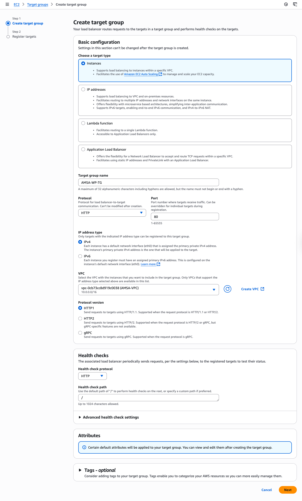
Target group configuration
- Target Group:
The load balancer checks the health of the EC2 instances through port 80 and the path /. This means that the load balancer will send traffic to EC2 instances that respond correctly to HTTP requests on the / path. Since our EC2 instances have WordPress installed, these instances will respond correctly to HTTP requests on the / path. We can leave the default configuration. The WordPress installation includes a home page that will respond with 302 (Found) when accessing the root path (/), which is why the health check may show that the instance is unhealthy. Once WordPress is configured, the health check will show that the instance is healthy.
Select the two EC2 instances that host WordPress (AMSA-WP-01 and AMSA-WP-02) and add them to the target group using the Include as pending below button and then Add to registered.
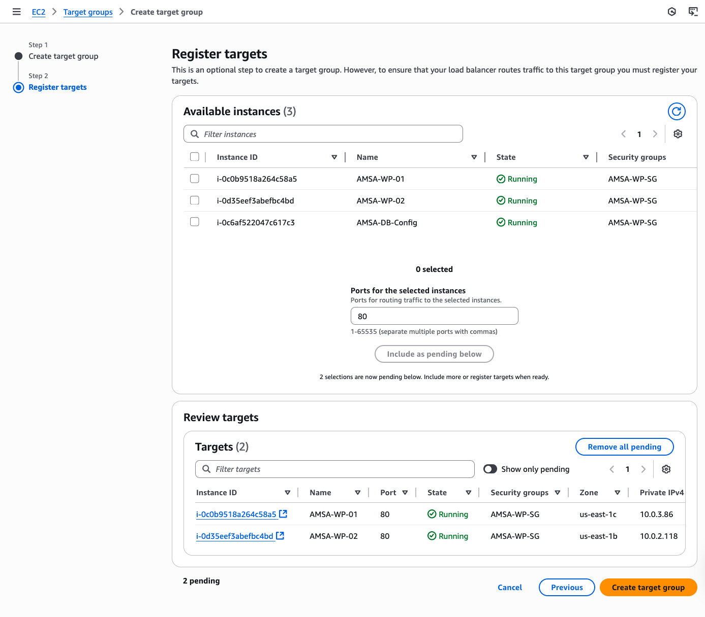
Target group configuration Once the target group has been created, we will select it as the target for the load balancer’s listener.
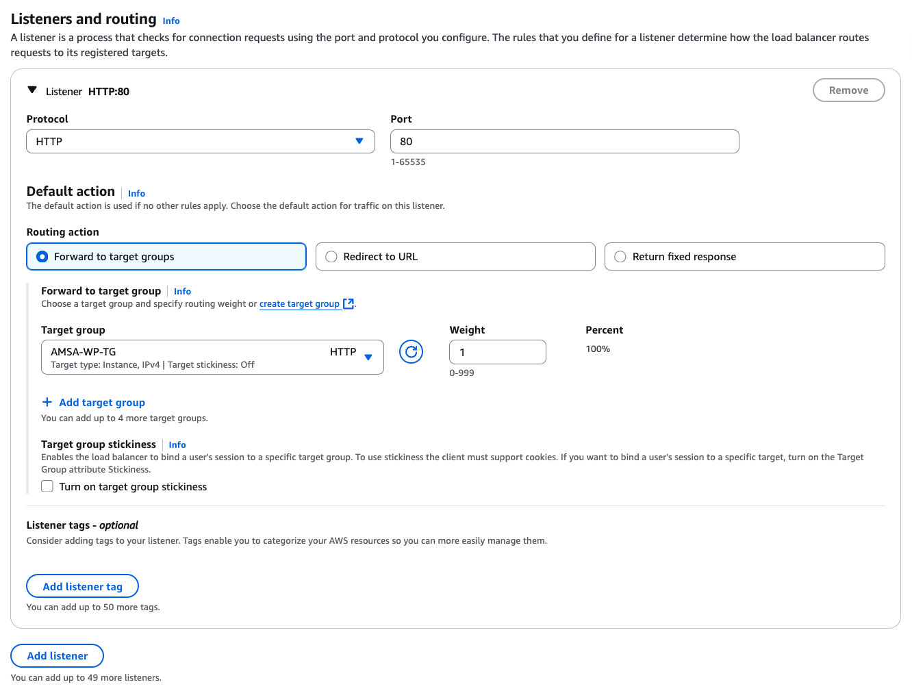
Load balancer configuration Once the load balancer has been created, you must wait a few minutes until its status changes from Provisioning to Active. Once the status change to Active, you can access the load balancer through its DNS address

- Now we can access the load balancer through its DNS address and see the WordPress installation page:

We will proceed to install WordPress through the load balancer. Follow the installation steps and configure the administrator username and password. Now you have the web server configured with WordPress and the load balancer to distribute traffic between the EC2 instances.
7. VPN configuration
7.1.Create an EC2 to deploy the VPN server
To deploy the VPN server, we will create a new EC2 instance that will act as the VPN server. This EC2 instance must be in a public subnet connected to the internet. We will name this instance AMSA-VPN and place it in the public subnet AMSA-DMZ-01. This EC2 instance will use the security group AMSA-VPN-SG, which will allow the necessary traffic for the VPN server to function.
- Navigate to the AWS console and select the EC2 service. In the sidebar, select Instances and then Launch Instances.
- Select the image Ubuntu Server 22.04 LTS.
- Select the instance t2.micro.
- Configure the instance:
- Network: AMSA-VPC
- Subnet: AMSA-DMZ-01
- Auto-assign Public IP: Enable

EC2 instance configuration for the VPN server - Configure the security group: AMSA-VPN-SG.
If you review the installation documentation for the OpenVPN server: OpenVPN: OpenVPN Access Server System Administrator Guide, you will see that we need the following ports open: TCP 943, UDP 1194.
Connect to the EC2 instance through the AWS online console or with an SSH connection and run the following command to install the OpenVPN server:
sudo apt update -y sudo apt install ca-certificates gnupg wget net-tools -y sudo wget https://as-repository.openvpn.net/as-repo-public.asc -qO /etc/apt/trusted.gpg.d/as-repo-public.asc sudo echo "deb [arch=amd64 signed-by=/etc/apt/trusted.gpg.d/as-repo-public.asc] http://as-repository.openvpn.net/as/debian jammy main" | sudo tee /etc/apt/sources.list.d/openvpn-as-repo.list sudo apt update && sudo apt install openvpn-as -y
OpenVPN server installation With these credentials, you will be able to access the OpenVPN server’s web interface through your web browser. Navigate to the public IP of the EC2 instance (in my case https://44.199.196.242:943/admin). Since we don’t have the SSL certificate configured, a warning message will appear—ignore it and continue. Log in with the credentials you configured earlier..
Note: If you have lost the
openvpnuser credentials, you can recover them by checking the OpenVPN server log file. For example, you can view the log file with the following command:sudo less /usr/local/openvpn_as/init.log
OpenVPN server web interface - Accept the license terms..

Accepting the license terms. Go to VPN Server/Network Settings and set the Hostname or IP Address to the public IP of the EC2 instance where your OpenVPN server is running. Once done, click Save.
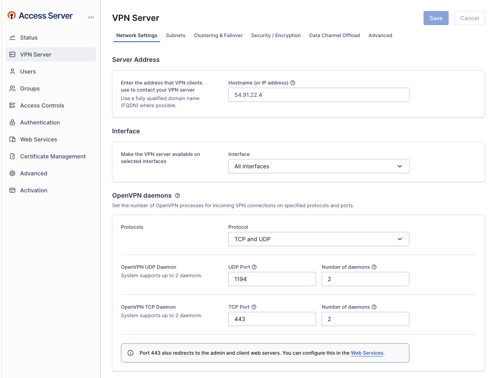
Configuring the VPN Server’s Public IP Go to Access Controls/Internet Access and DNS and select the Split Tunnel option to prevent all client traffic from being redirected through the VPN. Only traffic destined for the VPC subnets will be routed through the VPN.
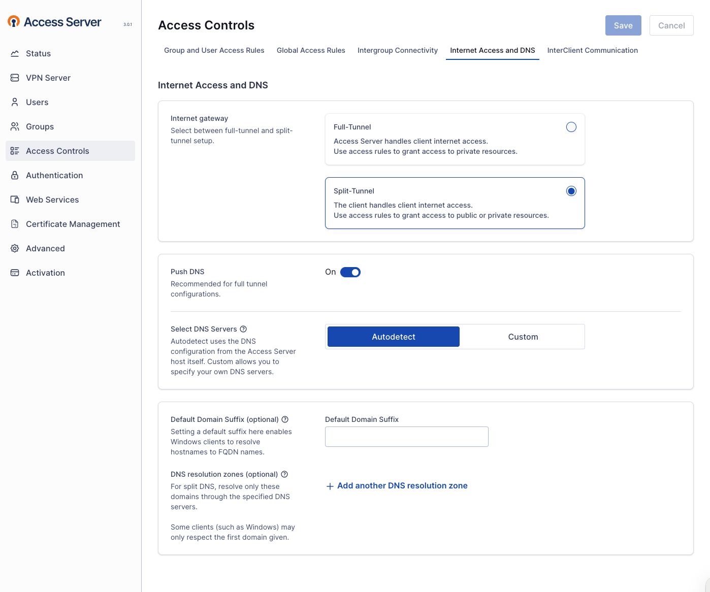
Configuring Split Tunnel Go to Access Controls/Global Access Rules and add a rule to allow VPN traffic to the VPC subnets:
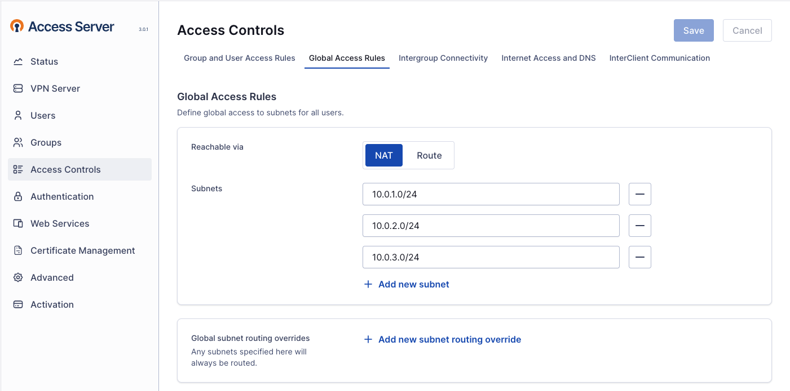
Configuring Global Access Rules Go to User and create a username and password to connect to the VPN server.
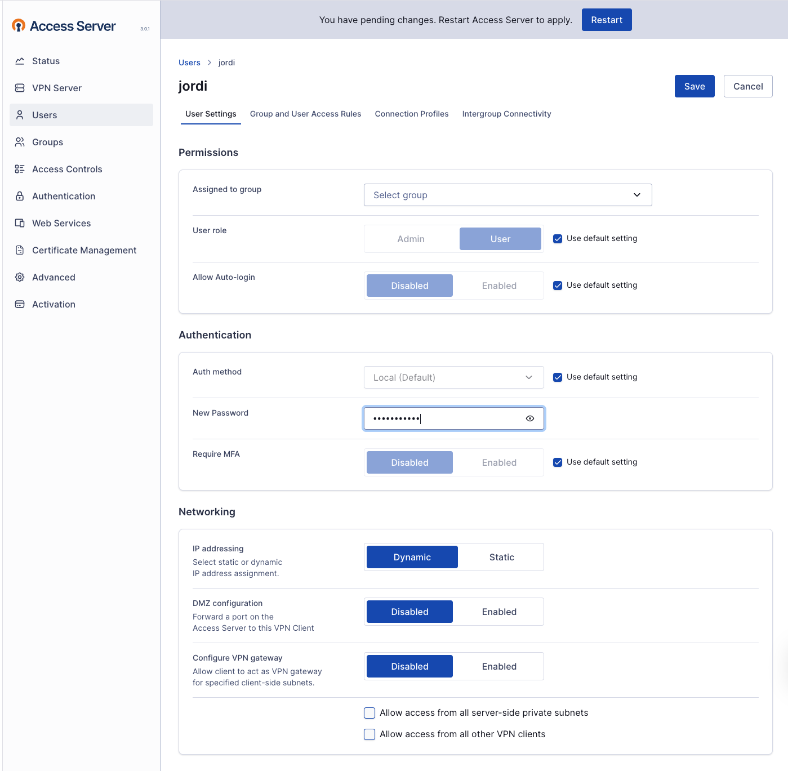
Creating a VPN Server User Once you have the configuration file, you can Restart the OpenVPN service to apply all changes. Then, access the OpenVPN server web interface again.
Go to User/user/Connection Profiles and create a default connection profile. Once created, a configuration file will be downloaded, which we will later use to connect to the VPN server.
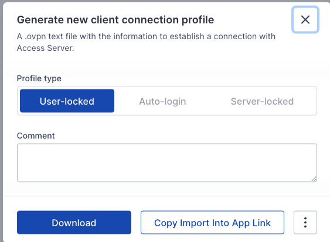
Downloading the VPN client configuration file Install the OpenVPN Connect application on your computer. This application is the VPN client we will use to connect to the VPN server.
Once installed, open the application and import the configuration file you downloaded earlier.
Once everything is configured, we will update the security group of the EC2 instances to allow traffic on port 22 only from the VPN server. This means that the EC2 instances will only accept SSH traffic from the VPN server and not from any other source.

Configuring SSH traffic to EC2 from the VPN server.
At this point, you will no longer be able to access the EC2 instances running the WordPress service via SSH, since SSH traffic is only allowed from the VPN server. To access the EC2 instances, you must first connect to the VPN server and then connect to the EC2 instances. To do this:
Import the OpenVPN Connect client configuration file into the application and connect to the VPN server.

Connecting to the VPN Server TroubleShooting: If you see in the configuration file (Server Hostname) an IP in the range 10.0.X.X, this means that the VPN has not been configured correctly. Make sure to restart the server and download the client configuration file again; it must include the VPN server’s public IP address.
Use the same password as the user
openvpnto connect to the VPN server.
Connection to the VPN server If everything went well, you will see that you are connected to the VPN server.

Connection to the VPN server
Finally, connect to the EC2 instances:

Important considerations: The VPN server allows us to access the EC2 instances via SSH, but using the internal address (10.0.X.X) of the EC2 instance. We will not be able to access the EC2 instances through their public address because we have configured the VPN to access the VPC subnets.
8. Cleanup
Once completed, you can delete all EC2 instances and the RDS database to avoid unnecessary charges to your AWS account.